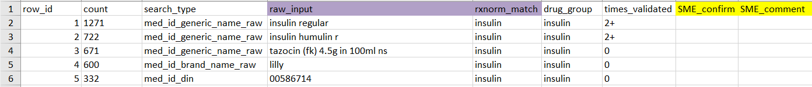
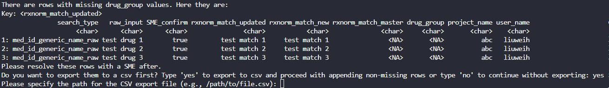

RxNorm and Pharmacy Mapping
pharmacy_mapping.RmdIntroduction
GEMINI receives raw pharmacy tables from participating sites. The
GEMINI team developed the RxNorm function (rxnorm_query())
to identify drugs of interest more easily and faster, by using the
RxNorm API from the National Library of Medicine. Please refer to our
publication for details at GEMINI-RxNorm.
Our team also developed a function
(prepare_pharm_for_validation()) to subsequently process
the matches identified by the RxNorm function, preparing them for
validation by a Subject Matter Expert (SME), and a function
(add_validated_pharm_map()) to append the SME-validated
matches into GEMINI’s Pharmacy Master Mapping file (for GEMINI staff
only).
The series of functions is designed to support analysts in identifying orders for specific drug(s) of interest from the GEMINI pharmacy data table. This vignette provides general guidelines for effectively using these functions. Analysts are encouraged to consult the function documentation for more detailed information.
Design Overview

Setup
Please note that the workflow as described here is only supported for the following database versions:
GEMINI staff:
drm_cleandb_v4_1_1or newerHPC4Health users:
gemini_h4h_template_v5_0_1or newer
Libraries and Database
library(Rgemini)
library(RPostgreSQL)
library(DBI)
library(dplyr)
library(getPass)
library(data.table)
## Connect to the DB that stores the Pharmacy Data Table
db_con <- DBI::dbConnect(
DBI::dbDriver("PostgreSQL"),
dbname = "db_name", # For HPC4Health users: connect to H4H template DB
host = "domain_name.ca",
port = 1234, # placeholder for real port number
user = getPass::getPass("Username: "),
password = getPass::getPass("Password: ")
)
# HPC4Health users additionally need to set their data cut schema as follows:
# dbSendQuery(db_con, "Set schema '<datacut_name>';")Guiding example: Insulin
In this vignette, we will use the hypothetical scenario below as a basic guiding example. Each section will demonstrate how the functions can be applied at different steps of the workflow to address this question:
Among encounters with a discharge date between January 1 and March 31, 2022, what proportion had a pharmacy order for ‘insulin’ during their hospital stay?
# query genc_ids in cohort of interest
example_cohort <- dbGetQuery(
db_con,
"SELECT genc_id
FROM admdad
WHERE discharge_date_time >= '2022-01-01 00:00'
AND discharge_date_time <= '2022-03-31 23:59';"
)Note: For the purpose of this vignette, we assume that the study cohort has complete pharmacy data coverage. In practice, analysts should check whether the study cohort has pharmacy data coverage. See data_coverage vignette for details.
Using rxnorm_query()
The rxnorm_query() function retrieves
rows from the GEMINI pharmacy data that RxNorm matched to the
user-specified drug term(s).
The function returns matched pharmacy entries in long
format with columns: genc_id,
search_type (which pharmacy column was found to have a
match), raw_input (value from that search_type),
rxnorm_match (which drug(s) of interest it is matched
with).
Key parameters
There are 5 primary parameters in the function:
-
drug_name: Character vector containing generic or brand names of the drug(s) of interest. We recommend providing drug names in singular form (e.g, “insulin”, not “insulins”). Users may also inspect thelookup_pharmacy_mappingtable and align naming conventions with previously used search terms (seerxnorm_match). -
drug_class: Character vector with ATC codes or names of drug classes. For example, for insulin, users can provide ATC class “A10AB” or class name “Insulins and analogues for injection, fast-acting”. -
return_unmatched: IfFALSE(default), the function only returns rows matching the drug(s) of interest (in long format). IfTRUE, the function will return a list that additionally containsunmatched_rowscontaining pharmacy entries that RxNorm did not match to the searched drug (in wide format). -
cohort: Optional input allowing users to provide a table containinggenc_idsto search against. If no input is provided, all rows in the pharmacy table will be searched. Whenreturn_unmatchedis TRUE the function returns an error if nocohortinput is provided because returning theunmatched_rowsfor all pharmacy entries will result in memory issues. -
return_drug_list: Optional parameter allowing users to obtain a list of drugs (rxcui, drug_name) when runningrxnorm_query()withdrug_class. Default is FALSE.
NOTE: There are 3 different ways to provide drug inputs into this function:
-
Provide
drug_nameonly: This is the recommended way.
-
Provide
drug_classonly: The function will prompt user to confirm a list of ATC classes and the drugs associated with the ATC classes. Users are indirectly querying based on drug names and heavily rely on the drug name to ATC relationship from RxNorm.- If
drug_classis used, it is best to provide ATC codes at the level between 2 to 4 according to the Anatomical Therapeutic Chemical Classification system by the World Health Organization. See WHO ATC for details. ATC codes at level 1 (e.g. “J: Antiinfective for systemic use”) lacks specificity. ATC codes at level 5 (e.g. “J01CA04: amoxicillin”) are too detailed that they cannot be searched as a drug class indrug_class
- When
drug_classis used, the function internally converts the drug classes into a list of drug names and then queries based on the drug names. We recommend users to turn onreturn_drug_listwhen usingdrug_class. This will output a list of drug names associated with thedrug_class, allowing users to confirm the list with an SME.
- If
-
Provide both
drug_nameanddrug_class: This will return a union of the two searches.
Insulin example
# run RxNorm query
rxnorm_res <- rxnorm_query(
dbcon = db_con, # DB containing the Pharmacy Data
drug_name = c("insulin"),
cohort = example_cohort
)
# returns pharmacy entries RxNorm matched to the searched drug name
head(rxnorm_res %>%
arrange(genc_id, row_num))
Dummy output of rxnorm_query().
Searching for combined drugs
The search for drugs commonly used in combination or drugs with multiple active components is a bit more complex. There are 2 complementary strategies to search for combined drugs.
- Search by the individual drug names or the individual active component names. Example 1.
- Search by the brand name / generic name of the combined drug (if available). Example 2.
Depending on the drug(s) of interest, RxNorm’s sensitivity can be very different for the 2 methods. Users should explore both strategies to determine what works best for their needs.
Additionally, analysts should consult with the project SME to identify relevant brand/generic names of the combined drug. Analysts can also search for brand/generic names on the RxNav website.
Example 1:
- Drugs of interest: Drugs using Trimethoprim and Sulfamethoxazole in combination.
- User should input c(“trimethoprim”, “sulfamethoxazole”) into
drug_name, instead of combining the two drugs into one customized entry like “trimethoprim-sulfamethoxazole” or “trimethoprim/sulfamethoxazole”. - The search will return pharmacy orders matching one or more of the two drugs.
- To narrow down to orders where the two drugs are used in
combination, the user can then use
greplto identify results with “|” to find matches where both Trimethoprim and Sulfamethoxazole are found. - This combination is available under different brand names. If the user has a list of these brand names, they can perform a second search on the brand names (see Example 2).
# Example 1 Trimethoprim and Sulfamethoxazole
rxnorm_res_ex1 <- rxnorm_query(
dbcon = db_con,
drug_name = c("trimethoprim", "sulfamethoxazole"),
cohort = example_cohort
)
rxnorm_res_ex1[grepl("\\|", rxnorm_match)] %>%
arrange(genc_id, row_num) %>%
head()
Dummy output of rxnorm_query().
Example 2:
- Drug of interest: A drug with brand name Complera.
- This drug contains three active components: Emtricitabine, Rilpivirine, and Tenofovir Disoproxil Fumarate.
- This combination of the three active components is only available under the brand name Complera.
- Users should therefore run
rxnorm_query()input withdrug_name = "complera". - A second search can be performed on the individual ingredients (see Example 1) to potentially find additional matches. However, for combination drugs that are available under one specific brand name, searching by individual components can be less sensitive than directly searching by brand name.
# Example 2 Complera
rxnorm_res_ex2 <- rxnorm_query(
dbcon = db_con,
drug_name = "complera",
cohort = example_cohort
)
tail(rxnorm_res_ex2)
Dummy output of rxnorm_query().
Important notes
If a user inputs more than one search term in
drug_nameordrug_class,rxnorm_matchmay contain a pipe “|”. This indicates that a given cell from the pharmacy table was matched to multiple search terms, separated by the pipe.rxnorm_matchonly contains drug terms the user searched for based on the input provided todrug_nameand/ordrug_class(even if the pharmacy entry may contain an additional drug; this will not appear as it wasn’t searched for by the user).RxNorm is a US-based tool. Although this is highly uncommon, drugs that are only prescribed in Canada (and not in the US) cannot be found by RxNorm. In addition, the current
rxnorm_query()tool does not support searches based on Canadian brand names. Please use the equivalent American brand name or generic name instead.If
rxnorm_query()returns an error saying “drug could not be found”, please check the RxNav website as sometimes there may be alternative searchable drug names based on the suggestion from the search bar. For example, runningrxnmorm_query()withdrug_name = "Paxlovid"returns an error. However, when entering “Paxlovid” into the RxNav search bar, auto-completion will show several results (e.g., “paxlovid 150 mg / 100 mg dose pack”). Users should use the exact search results from RxNav asdrug_nameinputs forrxnorm_query().
Using prepare_pharm_for_validation()
RxNorm is not a perfect tool and may generate false-positive
matches. A typical workflow we recommend is consulting an SME to
validate the output of rxnorm_query(). This could
be a physician, pharmacist, or anybody with knowledge of medication.
They can ensure that the pharmacy records identified by RxNorm are
indeed accurate.
prepare_pharm_for_validation() was
developed to streamline this validation process. It helps analysts to
process the RxNorm results into standardized frequency tables for
validation and to conduct subsequent analyses.
3 key advantages of using this function:
It compares the RxNorm results against previously validated mappings in the Pharmacy Master Mapping table, flagging matches that had already been validated before by other projects. This allows SMEs to focus primarily on new matches, streamlining the validation process.
Pharmacy data includes multiple fields containing drug information, which can contain redundant or inconsistent drug information for the same pharmacy order. The function provides a standardized way to handle these issues by applying hierarchical rules to prioritize matches from certain fields over others. The hierarchical rules are predefined by GEMINI SMEs.
It performs small cell suppression on data associated with less than 6 encounters to protect patient privacy.
Key parameters
-
dbcon: Database connection (same as forrxnorm_query()). The function will then query thelookup_pharmacy_mappingtable containing previously validated RxNorm matches. -
rxnorm_res: Object returned byrxnorm_query(). -
hierarchy: Flag indicating whether to apply the predefined hierarchy filters to retain only highest-priority drug information per pharmacy row. -
cell_suppression: Flag indicating whether to apply small cell suppression to the outputs. -
outpath: Optional input specifying the file path where the results will be saved. File export is only permitted whencell_suppression=TRUE. -
custom_lookup: Internal GEMINI analysts can optionally provide a custom version of thelookup_pharmacy_mappingtable (e.g., based on the latest table in the Pharmacy Master Mapping DB). See function documentation for more details.
NOTE:
-
The hierarchy rules follow this order:
med_id_generic_name_raw > med_id_brand_name_raw > med_id_hospital_code_raw > med_id_din > med_id_ndc > iv_component_type
For each pharmacy row (identified by
row_numof the pharmacy table), only the highest-priority column that was matched to the drug(s) of interest is retained as the “raw_input” for that row. The defaulthierarchy=TRUEis highly recommended. Only set toFALSEwhen applying non-standard hierarchy rules and conducting further detailed investigations.With the hierarchy rule in place, it would be rare for drug information from the lowest priority column to show up in the results (i.e.
iv_component_type). When that happens, it means that no drug match was found for the other 5 higher priority columns. However, it is possible that the higher priority columns suggests the pharmacy order is for a diffferent drug (not the drug of interest): e.g.,med_id_generic_name_raw = 'trimethoprim'vs.iv_component_type = 'insulin'. Therefore, when there areiv_component_typeentries in the returned results, analysts should inspect the original pharmacy order corresponding to those entries, to ensure the drug info at higher priority columns are NOT pointing to a different drug.
Insulin example
Pre SME validation
We have already run the RxNorm search for insulin in the above
section using rxnorm_res <- rxnorm_query(...). We can
now pass rxnorm_res to the second function
prepare_pharm_for_validation() to process the search
results into a frequency table for SME validation:
prep_res <- prepare_pharm_for_validation(
dbcon = db_con, # same DB connection used in rxnorm_query()
rxnorm_res = rxnorm_res, # output of rxnorm_query()
hierarchy = TRUE,
cell_suppression = TRUE,
outpath = "path/to/output/folder/"
)
The returned object prep_res is a list
containing 2 data tables named ‘sme’ and ‘analyst’:
$sme is the frequency table to be shared with
the SME for validation:
prep_res$sme[c(1:5, 40:45), ]
Expand to understand the table
-
row_id: a unique identifier for each row of the table. It helps analysts to track entries in case of accidental row deletions during the validation process. -
count: number of unique genc_ids associated with each row. With cell_suppression = T, small counts less than 6 encounters are suppressed to “<6”. -
search_type,raw_input,rxnorm_match: distinct RxNorm results. -
drug_group: general classification of the drug inrxnorm_matchbased on previous mappings inlookup_pharmacy_mapping.drug_group = NAfor drugs that have not been previously mapped. -
times_validated: number of times eachraw_input ~ rxnorm_matchmatch has previously been validated (0: never been validated, 1: validated by one project, 2+: validated by two or more projects). -
SME_confirm,SME_comment: fields for SME to fill out during validation. - Note that text values in
raw_input,rxnorm_matchanddrug_grouphave been standardized. The function converts them to lowercase, singularizesrxnorm_matchanddrug_group, and handles special characters & leading/trailing white spaces. See in-package functionnormalize_text()for details.
$analyst is the frequency table for analyst’s own use:
prep_res$analyst[c(1:5), ]
- Same table as
prep_res$sme, with one additional column:pharm_row_num. -
pharm_row_numis a LIST storingrow_num- a unique identifier for each row of the pharmacy table. Analysts will need these values to retrieve encounter-level data from the pharmacy table after SME-validation. See Guidelines for post-validation. Sincepharm_row_numcontains encounter-level data, use of this table is restricted within the secure HPC environment (e.g. NORA, HPC4Health). Egress Outside the HPC Environment is Not Permitted. For illustration purposes of this vignette, the last digits ofpharm_row_numare hidden.
SME validation
When the user specifies a folder path to outpath, a file
named pharmacy_mapping_for_SME.xlsx is exported to the
corresponding folder. This file is the frequency table in
prep_res$sme in the user’s GlobalEnv. It is an aggregated
data file intended for sharing with the SME for validation.
Analyst should clearly explain to the SME how to use this table to conduct validation, following these key guidelines:
-
Columns highlighted in yellow: ‘SME_confirm’, ‘SME_comment’ should be filled out by the SME.

SME_confirm should be a logical value of TRUE or FALSE. Input TRUE to indicate that the SME verifies that
raw_inputmatchesrxnorm_match(i.e. information in purple-highlighted columns are correct), otherwise FALSE. While analysts may modify the table or add extra columns to meet project-specific needs, SME_confirm should always be included.SME_comment is intended for SME to add comments, ask questions, or flag exclusions. Even with a valid RxNorm match (
SME_confirm = T), the SME may still want to exclude a drug from the study, which should be indicated in this column. Analysts should clearly communicate the distinction between SME_confirm (RxNorm validation) and SME_comment (e.g., cohort inclusion).In cases where
rxnorm_matchcontains multiple matches separated by a pipe (e.g. “cefuroxime | vancomycin”) and not all matches are correct, the SME should still enter SME_confirm as TRUE, and then specify the correct match(es) in SME_comment, or manually correct the value inrxnorm_match.times_validated allows the SME to prioritize verifying entries that haven’t been validated yet (times_validated = 0). However, SMEs should also review previously validated entries and flag any errors they find.
Missing drug_group: The SME can choose to fill out the drug_group column if it is relevant for the project. For GEMINI analysts, the drug_group field must be completed for database upload; please reach out to GEMINI’s internal SME to complete this field before adding the validated mappings to the database (see Using add_validated_pharm_map()).
No rows should be deleted from the table.
Below is an example of the expected results after SME
validation:

- The SME entered 'T' to confirm that "insulin regular" correctly matches "insulin"; entered 'F' to indicate that "tazocin (fk) 4.5g in 100ml ns" does not match "insulin".
- The SME marked the drug in the 5th row as "exclude from cohort" to indicate that: although `raw_input` matches `rxnorm_match`, we want to exclude this drug entry from the study cohort.Post SME validation
Upon receiving the validated mapping from the SME, analysts should at least perform the following essential checks:
- Any accidental row deletion? Use
row_idto detect and track deletions. - Is
SME_confirmfully populated with TRUE/FALSE? If not, fill in the missing values or consult with the SME. - Review
SME_commentand address questions, clarify uncertainties, and note any cohort exclusions.
After completing sanity checks, analyst should save the cleaned validated mappings and proceed with their analyses.
Now that the SME has validated the RxNorm matches: How do
analysts identify entries from the pharmacy table
corresponding to the confirmed matches?
It is important to understand the following key variables linking
$sme, $analyst and the
pharmacy table:
sme.row_id ↔︎
analyst.row_id
analyst.pharm_row_num
↔︎ pharmacy.row_num
Analysts should use these key variables to link the validated
RxNorm matches with the pharmacy table, rather than using the
raw rxnorm_matches or other merging strategies. Please
carefully go through the steps in the example below to understand how
the linkages work.
Insulin example: To identify all encounters with an insulin order (based on the validated RxNorm matches), the analyst now needs to complete the following steps:
STEP 1. Load the prepared pharmacy R object.
prepare_pharm_for_validation(..., outpath = "path/to/output/folder/"),
the function saved an R object named
pharm_res_INTERNAL_USE_ONLY.rds. This R object is
equivalent to prep_res, containing the $sme
and $analyst tables. The R object offers a convenient way
for analysts to resume analysis after SME validation without the need to
re-run the time-consuming steps rxnorm-query() &
prepare_pharm_for_validation():
saved_robject <- readRDS("path/to/output/folder/pharm_res_INTERNAL_USE_ONLY_yyyymmdd.rds")
summary(saved_robject)
STEP 2. Cross-reference with SME-validated file to
identify the list of pharmacy orders (pharm_row_num) of
interest to the study.
###################################################
# Read in cleaned SME validated mapping file from folder
sme_valid_clean <- read_excel(file.path(getwd(), "your_path_to/pharmacy_mapping_for_SME_validated.xlsx"))
head(sme_valid_clean) # mock validation for demonstration purposes, not real validation
# # row_id count search_type raw_input rxnorm_match drug_group times_validated SME_confirm SME_comment
# # 1 1 1271 med_id_generic_name_raw insulin regular insulin insulin 2+ TRUE
# # 2 2 722 med_id_generic_name_raw insulin humulin r insulin insulin 2+ TRUE
# # 3 3 671 med_id_generic_name_raw tazocin (fk) 4.5g in 100ml ns insulin insulin 0 FALSE
# # 4 4 600 med_id_brand_name_raw lilly insulin insulin 0 TRUE
# # 5 5 332 med_id_din 00586714 insulin insulin 0 TRUE exclude from cohort
###################################################
# Filter SME-validated frequency table to rows of interest
insulin <- sme_valid_clean %>%
filter(SME_confirm == TRUE) %>% # filter drug entries to validated matches
filter(SME_comment != "exclude from cohort") # exclude entries not relevant for the study
###################################################
# Identify `pharm_row_num` corresponding to drug(s) of interest in the R object saved to analyst's folder
## Extract `row_id` corresponding to drug(s) of interest,
## since `row_id` is a consistent identifier pre- & post- validation.
## If for some reasons, `row_id` was altered unexpectedly, use `raw_input` instead.
insulin_row_id <- insulin$row_id
insulin_pharm_row_num <- saved_robject$analyst %>%
filter(row_id %in% insulin_row_id) %>%
pull(pharm_row_num) %>% # note that `pharm_row_num` is stored as list
unlist() # unlist to covert to vector
insulin_pharm_row_num[1:5] # mock example of row numbers
# [1] "54781..." "54781..." "54781..." "54786..." "54786..."
STEP 3. Identify encounters (genc_id)
associated with the validated pharmacy orders.
genc_ids with at least one
insulin order during their hospitalization:
# Send a list of row_num as a temp table in case the number of row_num is very long,
# since dbGetQuery has a character limit.
insulin_pharm_row_num <- data.table(row_num = as.numeric(insulin_pharm_row_num)) # ensure it's data.frame
# write the row_num into a temp table to improve query efficiency
dbWriteTable(db_con, c("pg_temp", "temp_row_num"), insulin_pharm_row_num,
temporary = TRUE, row.names = FALSE
)
query <- paste0("SELECT p.*
FROM pharmacy p
INNER JOIN temp_row_num t on t.row_num=p.row_num;")
pharm_tab <- dbGetQuery(db_con, query) # pull pharm rows containing validated drugs
#### alternative query (less efficient), if you don't have write access to create temp table in db_con
# query <- paste0("SELECT row_num, genc_id
# FROM pharmacy
# WHERE row_num IN (", paste(insulin_pharm_row_num, collapse=", "), ");")
# Encounters associated with the validated insulin entries:
insulin_cohort <- unique(pharm_tab$genc_id) # i.e. genc_ids with at least 1 insulin prescription order in the pharmacy table
length(insulin_cohort)
# [1] 4088
## A total 4088 encounters (7.7%) in the example cohort had
## at least 1 insulin order during their hospital stay,
## assuming cohort has consistent pharmacy data coverage.
## Pull pharm rows containing validated drugs
# write the row_num into a temp table to improve query efficiency
dbWritetable(db_con, c("pg_temp", "temp_row_num"), insulin_pharm_row_num,
temporary = T, row.names = F
)
query <- paste0("SELECT p.*
FROM pharmacy p
INNER JOIN temp_row_num t on t.row_num=p.row_num;")
pharm_tab <- dbGetQuery(db_con, query)
# Pull admission_date_time for the study cohort
adm_query <- paste0(
"SELECT genc_id, admission_date_time
FROM admdad
WHERE genc_id IN (", # this approach only suitable for a small number of genc_ids,
paste(example_cohort$genc_id, collapse = ", "), ");" # if cohort is large, send the list of genc_id as a temp table instead
)
adm_tab <- dbGetQuery(db_con, adm_query) %>%
mutate(admission_date_time = ymd_hm(admission_date_time))
# Impute missing time in `med_start_date_time` with 00h:00m
pharm_tab <- pharm_tab %>%
mutate(med_start_date_time = parse_date_time(med_start_date_time,
order = c("ymd HM", "ymd")
))
# Encounters with validated insulin entries within the first 24 hours of inpatient admission:
insulin_24hr_cohort <- pharm_tab %>%
left_join(adm_tab, by = "genc_id") %>%
filter(
med_start_date_time <= admission_date_time + hours(24),
med_start_date_time >= admission_date_time
) %>%
pull(genc_id) %>%
unique()
length(insulin_24hr_cohort)
# [1] 1982
## A total 1982 encounters (3.7%) in the example cohort had
## at least 1 insulin order din their first 24 hours of admission,
## assuming cohort has consistent pharmacy data coverage.More complex scenarios
Setting hierachy to FALSE
The pharmacy table has multiple fields containing drug information. For a single pharmacy order, RxNorm may match these fields to the same drug or different drugs.
Setting hierarchy=TRUE prioritizes fields to ensure
a one-to-one match (i.e. one order to one drug) to reduce unnecessary
mapping efforts. When hierarchy=FALSE, all matching
entries are returned without applying hierarchy rules to the
drug-containing fields. While setting hierarchy to FALSE is generally
discouraged, it may be useful for project-specific scenarios requiring
no or non-standard hierarchy rules. To apply customized hierarchy rules,
analysts could refer to the detailed code logic of applying hierarchical
filters in the prepare_pharm_for_validation() function.
Insulin example, hierarchy=T
vs. hierarchy=F:
prep_res <- prepare_pharm_for_validation(
dbcon = db_con,
rxnorm_res = rxnorm_res,
hierarchy = TRUE,
cell_suppression = TRUE
)
prep_res_nohier <- prepare_pharm_for_validation(
dbcon = db_con,
rxnorm_res = rxnorm_res,
hierarchy = FALSE,
cell_suppression = TRUE
)
- When `hierarchy == FALSE` the most frequent raw_input is DIN number "00586714".
- When `hierarchy == TRUE` DIN number "00586714" is not the most frequent value because the function now ignores any DIN matches for pharmacy entries that have already been matched to "insulin" based on `med_id_generic_name_raw`, `med_id_brand_name_raw`, or `med_id_hospital_code_raw` (which are prioritized according to the hierarchy rules).
- Below is a mock example of ONE pharmacy order from ONE encounter:
- For this order, the columns `med_id_generic_name_raw`, `med_id_brand_name_raw`, and `med_id_din` each contain drug information, all of which are matched to "insulin" by RxNorm. When `hierarchy == TRUE`, only the row with "med_id_generic_name_raw = insulin regular 100 unit/mL" is included in the result frequency table, while other rows are dropped, ensuring a one-to-one match. When `hierarchy == FALSE` all rows will be included, therefore, the redundant information "med_id_din = 00586714" and "med_id_brand_name_raw = Novolin" are returned and contribute to the frequency count.Unmatched results
Recall that with return_unmatched=TRUE in the
previous rxnorm_res <- rxnorm_query(...) function, the
returned object contains 2 items - matched and unmatched results. When
rxnorm_res contains unmatched results,
prepare_pharm_for_validation() will automatically
process them along with the matched results to facilitate SME
validation.
rxnorm_res_unmatch <- rxnorm_query(
dbcon = db_con,
drug_name = c("insulin"),
cohort = example_cohort,
return_unmatched = TRUE
)
prep_res_unmatch <- prepare_pharm_for_validation(
dbcon = db_con,
rxnorm_res = rxnorm_res_unmatch,
hierarchy = TRUE,
cell_suppression = TRUE
)
names(prep_res_unmatch)
# [1] "sme" "analyst" "unmatched_rows"
head(prep_res_unmatch$unmatched_rows, 8)
- An additional result table prep_res_unmatch$unmatched_rows is returned. This table is saved as the second tab of the .xlsx file when an outpath is provided.
- $unmatched_rows is a frequency table of all drug entries that did not match to the drug(s) of interest.
-
historically_mapped_to_drug and
historically_mapped_to_drug_group provide historical mapping
information based on a search against the existing mappings in the
master file. Distinct mappings from different projects are separated by
‘||’. See function documentation for details.
e.g. Drug information for the top 8 rows have not been previously mapped, except for “row_id=7”, which was mapped to drug “dalteparin” and drug_group “low molecular weight heparin”.
- Note that this secondary search is a broad search against all mapped drugs, and it is NOT specific to the user’s drug(s) of interest. Users may use regex search to identify their drug(s) of interest.
- We particularly recommend inspecting unmatched results when users suspect that the RxNorm search had low sensitivity/missed certain entries that could be relevant for the study (e.g., observed prescribing rates are lower than expected).
Expand to see an example
## Step 1. identify entries that have previously been mapped to insulin
insulin_hist <- prep_res_unmatch$unmatched_rows %>%
filter(grepl("insulin", historically_mapped_to_drug) | grepl("insulin", historically_mapped_to_drug_group))
head(insulin_hist)
## Alternative for Step 1, analysts may also use regex on all columns in the unmatched output
## to check if RxNorm/historical mappings have missed any entries that might correspond to the drug of interest
# insulin_unmatched <- prep_res_unmatch$unmatched_rows[
# prep_res_unmatch$unmatched_rows[
# , Reduce(`|`, lapply(.SD, grepl, pattern = "insulin|00586714|humulin", ignore.case = TRUE)),
# .SDcols = colnames(prep_res_unmatch$unmatched_rows) # search all columns
# ]
# ]
## Step 2. analysts can then extract the original pharmacy data based on info in the frequency table to obtain the relevant pharmacy row_num values
# Recall that prepare_pharm_for_validation() standardizes text values in rxnorm_res, so we need to do the same here before searching for matches
# this can be achieved by applying the utils function `normalize_text()` in the package
rxnorm_res_unmatch$unmatched_rows[, (names(rxnorm_res_unmatch$unmatched_rows)) := lapply(.SD, normalize_text)]
# then merge any relevant entries identified in the unmatched results with the unmatched RxNorm output
# to identify original pharmacy rows and their corresponding row_num
insulin_hist_pharm <- merge(rxnorm_res_unmatch$unmatched_rows, insulin_hist, all.x = FALSE)
- Columns starting with
SME_are for SME to fill out.e.g. if the SME identifies a drug entry in columnmed_id_brand_name_rawthat should have been matched to “insulin” but was missed by RxNorm (i.e. a false negative), inSME_mapped_search_typethey should enter “med_id_brand_name_raw”, inSME_mapped_search_typethey should enter “insulin”, and inSME_mapped_drug_groupthey could provide drug classification information, if available.
Considering routes of administration
Some research projects are specifically interested in drugs
administered via specific routes (e.g., topical vs. oral antibiotics).
In such cases, the general approach we recommend for analysts is to
first complete the RxNorm validation regardless of route information,
and then create a separate frequency table for route
entries among the validated pharmacy rows. An SME can then indicate
which routes should be included/excluded, allowing the analyst to filter
the pharmacy entries accordingly to obtain the final list of relevant
pharmacy orders.
Expand to see an example of how to filter insulin orders based on routes of interest
## Run rxnorm as usual
rxnorm_res <- rxnorm_query(
dbcon = db_con,
drug_name = c("insulin"),
cohort = example_cohort
)
## Prepare frequency table for drug(s) of interest as usual
prep_res <- prepare_pharm_for_validation(
dbcon = db_con,
rxnorm_res = rxnorm_res,
hierarchy = TRUE,
cell_suppression = TRUE
)
## Extract pharmacy data corresponding to insulin
## (for illustration purposes, we assume all matches in rxnorm_res are confirmed by SME)
insulin_pharm_row_num <- prep_res$analyst %>%
pull(pharm_row_num) %>%
unlist()
## Generate frequency table for routes corresponding to insulin, and share with SME
route_query <- paste0(
"SELECT genc_id, route
FROM pharmacy
WHERE row_num IN (", paste(insulin_pharm_row_num, collapse = ", "), # filter to rows with validated drugs
");"
)
## Create frequency table of `route` column
freqtab_route <- dbGetQuery(db_con, route_query) %>%
mutate(route = tolower(route)) %>% # minimal standardization, analysts should clean up the raw values as needed
group_by(route) %>% # can be merged with lookup_pharmacy_route to obtain previous route mappings
summarise(n = length(unique(genc_id))) %>%
arrange(-n) %>%
mutate(
row_id = 1:length(route),
SME_confirm = NA, # to be filled out by SME
n = ifelse(n < 6, "suppressed (n < 6)", n) # apply cell suppression
)
# # A tibble: 22 × 4
# route n row_id SME_confirm
# <chr> <int> <int> <lgl>
# 1 iv 2099 1 NA
# 2 subcut 1167 2 NA
# 3 .route 652 3 NA
# 4 iv continuous 476 4 NA
# 5 sc 330 5 NA
# 6 intravenous 308 6 NA
# 7 iv direct 299 7 NA
# 8 iv infus 239 8 NA
# 9 iv-direct/push 132 9 NA
# 10 subcutaneous 104 10 NA
# ℹ 12 more rows
# ℹ Use `print(n = ...)` to see more rows
## Next, let's assume the SME marks routes with the row_id = c(1, 4, 6, 7, 9)
## as routes of interest. The analyst can then use this information to further
## filter the insulin orders to those administered via these routes:
iv_route <- freqtab_route %>%
filter(row_id %in% c(1, 4, 6, 7, 9)) %>%
pull(route)
# identify genc_ids with insulin administered via routes of interest
pharm_query <- paste0(
"SELECT *
FROM pharmacy
WHERE row_num IN (", paste(insulin_pharm_row_num, collapse = ", "),
") AND route IN ('", paste(iv_route, collapse = "', '"), "');"
)
# filter pharmacy data to insulin that were administered via the routes of interest
iv_insulin <- dbGetQuery(db_con, pharm_query)- Note that the
routecolumn in thepharmacytable is not standardized. However, previous route mappings can be found in thelookup_pharmacy_routetable in the database. We recommend merging the route frequency table with the lookup table to facilitate route inclusions/exclusions. Researchers may need to perform additional route mapping for their drugs of interest. - In scenarios where drug and route information may interact and need
to be considered simultaneously, analysts should include all drug
(
rxnorm_matchxroute) combinations in this frequency table. - If route information is missing for certain pharmacy entries, analysts may need to investigate additional pharmacy columns to search for route-related information, or identify plausible routes based on medication DIN.
Preparing SME-validated mappings for database integration
Once the SME-validated mappings are finalized, they should be integrated into GEMINI’s Pharmacy Master Mapping database.
GEMINI Analysts are expected to document and perform the integration.
HPC4Health users are encouraged to contribute their mappings for inclusion in the our database, enabling reuse in future work.
To prepare your mapping for database upload, please follow these steps:
Step 1: Format the SME-validated mapping file (.xlsx) according to the following requirements:
- The file must have and only have the following
columns from the SME-validated frequency table:
search_type,raw_input,rxnorm_match,SME_confirm, anddrug_group.
-
SME_confirm must be logical values. Only include
rows with
SME_confirm=TRUE, non-True rows will cause mapping upload to stop.
- In some cases,
rxnorm_matchmay contain multiple matches separated by a pipe (e.g. “cefuroxime | vancomycin”). If the SME confirms only one or some of the matches, the analyst should editrxnorm_matchto retain only the confirmed entries.
- The column drug_group should be included if the SME has
filled it out. If not, this column can be left empty for now, however,
GEMINI analysts should reach out to GEMINI’s internal SME for filling
out this column upon running (see Using
add_validated_pharm_map()).
- If unmatched rows are examined and false negative entries
are found, the analyst should extract and add these mappings to the
final mapping file. To differentiate these manually identified entries
from those mapped by RxNorm, a prefix “manual_” should
be added to the mapped drugs. See ‘False negatives’ below for
details.
- Save the formatted final mapping as a .csv (required format) file to folder.
Step 2:
-
For HPC4Health users:
- Please submit your validated and formatted mapping file to support@gemini-hpc.ca. The GEMINI team will then integrate your mappings to the master pharmacy mapping database.
-
For GEMINI analysts:
- Document the mapping information on the Solo
mapping tracker
- Run the
GEMINIpkgfunction add_validated_pharm_map(), which uploads the finalized mappings to the Pharmacy Master Mapping database.
- Document the mapping information on the Solo
mapping tracker
Insulin example
Prepare the SME validated pharmacy mapping file to the format required for database integration:
# read the SME validated mapping file from the user folder
pharmacy_mapping <- read_excel(file.path(getwd(), "your_path_to/pharmacy_mapping_for_SME_validated.xlsx"))
# # row_id count search_type raw_input rxnorm_match drug_group times_validated SME_confirm SME_comment
# # 1 1 1271 med_id_generic_name_raw insulin regular insulin insulin 2+ TRUE
# # 2 2 722 med_id_generic_name_raw insulin humulin r insulin insulin 2+ TRUE
# # 3 3 671 med_id_generic_name_raw tazocin (fk) 4.5g in 100ml ns insulin insulin 0 FALSE
# # 4 4 600 med_id_brand_name_raw lilly insulin insulin 0 TRUE
# # 5 5 332 med_id_din 00586714 insulin insulin 0 TRUE exclude from cohort
# subset the file to contain only necessary columns
pharmacy_mapping <- pharmacy_mapping %>%
select(search_type, raw_input, rxnorm_match, SME_confirm, drug_group) %>%
unique()
# ensure SME_confirm is a **logical variable** and remove non-TRUE values
pharmacy_mapping <- pharmacy_mapping %>%
mutate(SME_confirm = as.logical(SME_confirm))
pharmacy_mapping <- pharmacy_mapping[SME_confirm == TRUE]
# write the updated file to a csv to the user folder
fwrite(pharmacy_mapping, file.path(getwd(), "your_path_to/pharmacy_mapping_for_SME_validated_updated.csv"))Mappings to include
Note that NOT all types of mappings need to be included to the master file. The only types of mapping we collect are True positives and False negatives (if applicable):
True positives are drug entries RxNorm correctly
identified. For example, the red-highlighted rows below are the true
positives and should be added to the master file:

Essentially, they are the rows with `SME_confirm=TRUE`. Also note that, althought the SME commented to exclude the 5th row from the study, the 5th row is still a true positive match for insulin and thus should still be added. The expected formatted file, after the analyst filters mappings to
true positive rows:

If your study also examines unmatched results (i.e. running
rxnorm_query() with return_unmatched=T), there
may have false negative mappings, which we are also interested to
collect.
False negatives are drug entries missed by RxNorm and found by examining unmatched rows. In the mock example below, the blue-highlighted row is an entry that RxNorm missed but was identified as insulin by the SME.

Analyst should perform additional preprocessing to append this entry to the final file along with the true positives. Namely, convert:
- `SME_mapped_search_type` to `search_type`,
- the relevant drug entry to `raw_input`
- `SME_mapped_drug` to `rxnorm_match` while adding a prefix "manual_" to the drug name
- `SME_mapped_drug_group` to `drug_group`
- set `SME_confirm` to TRUE.The expected final formatted file for database upload
(containing both the true positives and the false negative entries):

Using GEMINIpkg::add_validated_pharm_map() (GEMINI
Analysts Only)
Expand section for database upload instructions
GEMINIpkg::add_validated_pharm_map()
was developed to accurately and efficiently append new validated
pharmacy mappings to the existing collection of pharmacy mappings stored
in the Pharmacy Mapping database.
Note that this function is ONLY available in the internal package
GEMINIpkg (not available in Rgemini). To use
this function, users will need to load the GEMINIpkg library to their
workspace or call GEMINIpkg::add_validated_pharm_map().
The function runs a series of checks, processes validated pharmacy mappings, and appends new mappings to the database. If the checks detect any data issues, the user is provided with options to resolve them.
Newly validated rows can only be appended if the
drug_group field is fully populated
(i.e. drug_group is mandatory). The function provides a
convenient way to help users resolve the missing values in this
field.
Expand to see important note about drug_group for analysts
Classifying drugs into groups is not always neccessary for individual research projects, so project SMEs are not required to fill out `drug_group`.
However, high-level drug classification can often be beneficial for various research purposes. Therefore, filling out `drug_group` is required for mappings added to GEMINI's Pharmacy Master Mapping table and can be performed by GEMINI's internal SMEs. As there is no single "best" way to systemetically classify drugs, analysts are **not expected** to fill out the `drug_group` themselves. Instead, they should use the `add_validated_pharm_map()` function to extract existing classifications, and reach out to our SMEs to perform mapping for drugs that have not been previously grouped. This ensures that drugs are classified in a relatively consistent manner over time. See sections below for details.For new pharmacy mapping records that have passed the checks, the
function will append them to the Staging Pharmacy Mapping table
(staging.working_pharmacy_mapping in the
database), along with the user’s database
user_name, project_id, and a timestamp
(last_updated). The added user information allows tracking
of records in case a revision is necessary.
Overall, the function prevents analysts from appending incorrect, incomplete, or duplicate mappings to the Pharmacy Mapping Master table, and provides analysts with both a more efficient and accurate way to grow the existing collection of pharmacy mappings.
Key parameters
There is only one parameter in the function:
file_path - path for a .csv file
containing the newly validated pharmacy mapping records.
NOTE:
The csv file imported from the
file_pathparameter must meet the formatting requirements in Preparing SME-validated mappings for database integrationThere are implicit parameters users need to provide through prompts when running the function:
-
Username: the username of the analyst for their database connection. -
Password: the password of the analyst for their database connection. -
Project Title: the Abbreviated Title of the research project as per the GEMINI Project Tracker. If the mapping is not associated with a project on the tracker, the user should provide a brief name that describes the mapping activity, e.g. ‘reports_sedhypno_indicator’. -
CSV Output Prompt: if the value entered isyes, unmapped records withoutdrug_group, will be exported to a csv file. If the value entered is anything else, the unmapped records will not be appended and instead returned to the user’s R environment object. -
CSV Output Path: if the user chooses to export records withoutdrug_group, they must then enter a path the csv file will be exported to. -
Final Confirmation: a final confirmation that the user needs to provide. If ‘confirm’ is entered, the function will append the new validated pharmacy mapping records to the Staging Pharmacy Mapping file in the database. If anything else is entered, nothing will be appended, and the function will exit.
- To ensure drugs are consistently classified into groups in the
master mappings table, the function detects and handles missing or
misaligned
drug_groupentries in the csv file. The function:(a) auto-fills missing drug_group values using existing mappings from the master mapping table
(b) corrects entries where the provided drug_group misaligned with the master mapping
(c) flags the remaining unmapped entries for users to resolve them
Mapped entries from (a) and (b) will be appended to the database. For unmapped entries from (c), the function allows users to either export them to a file or interact with them in their R environment, where they can then consult our SMEs to complete the mappings, which can be uploaded to the database by re-running the function. For details, please see the example in Unmapped drug_group variable.
For users who prefer uploading everything at once, this process may be adjusted, however, this is recommended only for those with a thorough understanding of the function and confidence in reproducing the steps. For example, users may manually query the staging.working_pharmacy_mapping for existing drug_group and consult with SME for mapping before running the function; or they may run the function to perform the query, exit before the final confirmation step to avoid uploading, and re-run the function to upload the completely filled out mappings.
- The function can be terminated at any time (via [ctrl+c] on NORA) without appending anything to the database.
- Nothing is appended to the database until the very last step where
the user is prompted to type exactly
confirm. Hence, if a mistake was made when entering values for the function’s prompts, the user can simply exit the function without making unintended database changes. - The checking for existing copies of pharmacy mappings and the
appending of new pharmacy mappings are performed on the
staging.working_pharmacy_mappingdatabase, not thepharmacy_master_mappingdatabase. Thestaging.working_pharmacy_mappingwill be used to update thepharmacy_master_mappingdatabase at various intervals in time. - When a new version of
drm_cleandb/gemini_h4h_templateis created, thelookup_pharmacy_mappingtable is updated according to the newest version of thepharmacy_master_mappingDB.
Insulin example
Run the function on the cleaned file - the file user saved to folder in the preparing step above:
library(GEMINIpkg) # load required package for the function
add_validated_pharm_map(file.path(getwd(), "your_path_to/pharmacy_mapping_for_SME_validated_updated.csv"))
Upon running, the function will perform checks on the input file
and stops if any check fails.
Expand to see what happens when a check fails
For example, if you do not filter for only SME_confirm == TRUE records, then the function will stop and ask you to resolve the invalid values. Invalid records are printed in the console - rows with SME_confirm as NA:


After all checks are passed, you will be prompted to enter your
database Username, Password, and the Abbreviated Title of your
project:

Next, the function checks if any to-be-appended records already
exist in the Pharmacy Master Mapping file. Records with 2 or more copies
of the same mapping will not be appended. These records will be printed
in the console for user to review and acknowledge:

Afterwards, the final set of new records that will be appended
to the database is displayed in the Viewer for interactive review:

The user will be prompted one final time to confirm the addition.
If ‘confirm’ is entered, the records will be added to the database. If
‘confirm’ is not entered, no records will be appended and the function
will exit.

More complex scenarios
Unmapped drug_group variable
If there are rows where the drug_group variable has
missing records even after mapping with the Pharmacy Master Mapping file
in the database, the function allows the user to either output a csv
file containing the missing records for the SME to validate or output
the table of missing records into the R environment to investigate.
Here is an example of what happens when there is no
drug_group in the SME validated file, when running the
function:
### run the function on the newly updated file
add_validated_pharm_map(file.path(getwd(), "your_path_to/pharmacy_mapping_for_SME_validated_updated_no_drug_group.csv"))
Unmapped drug_group records are printed in the
console and users have the option to export them into a csv file for the
SME to determine the drug_group. If ‘yes’ is entered, the
user will be prompted to enter the path for exporting the csv file:

If the user enters ‘no’ to the prompt, then the function will
proceed as usual without exporting the unmapped drug_group
rows, and the unmapped drug_group rows will be created in
the R environment as the object
missing_drug_group_rows:

After this step (output/save the unmapped rows), the function will proceed as usual: mapped rows will be appended to the database upon ‘confirm’, while unmapped rows will not.
Making changes to the appended records
After appending to the Staging Pharmacy Mapping file in the database, if a mistake was discovered, it is possible to make changes to the records directly using SQL queries.
Changes can only be made to records created by the respective
owner, as determined by the user’s unique database access
username in the user_name column. As a reminder, the
user_name column is automatically appended to the database
after a successful run of add_validated_pharm_map(). The
timestamp column, last_updated can also be used to help the
user identify rows to change.
For example, the user below realized that all oral anticoagulants
appended on 2024-11-01 were incorrect, the user removes them from the
database (so that they can be fixed and reappended using
add_validated_pharm_map()) by doing the following:
# Connect to the pharmacy_mapping db
drv <- dbDriver("PostgreSQL")
map_db_con <- DBI::dbConnect(drv,
dbname = "pharmacy_mapping",
host = "domain_name.ca",
port = 1234,
user = "username",
password = getPass("Enter Password:")
)
# First inspect the rows to be deleted
rows_to_delete <- dbGetQuery(map_db_con, "
SELECT *
FROM staging.working_pharmacy_mapping
WHERE user_name = 'username'
AND last_updated::date = '2024-11-01'
AND drug_group = 'oral anticoagulant';
")
# An example of the returned rows
head(rows_to_delete)
# user_name search_type raw_input rxnorm_match drug_group project_name last_updated
# 1 username med_id_generic_name_raw acenocoumarol acenocoumarol oral anticoagulant GEMINI-Project-Name 2024-11-01 09:30:06
# 2 username med_id_generic_name_raw apixaban apixaban oral anticoagulant GEMINI-Project-Name 2024-11-01 09:30:06
# 3 username med_id_generic_name_raw apixaban 2.5 mg tab apixaban oral anticoagulant GEMINI-Project-Name 2024-11-01 09:30:06
# 4 username med_id_generic_name_raw apixaban 2.5 mg tablet apixaban oral anticoagulant GEMINI-Project-Name 2024-11-01 09:30:06
# 5 username med_id_generic_name_raw apixaban 5 mg tab apixaban oral anticoagulant GEMINI-Project-Name 2024-11-01 09:30:06
# 6 username med_id_generic_name_raw apixaban 5 mg tablet apixaban oral anticoagulant GEMINI-Project-Name 2024-11-01 09:30:06
### Running the delete statement
# When making changes to the database, please use 'BEGIN' statements with 'COMMIT' statements if changes are final.
# Or use 'ROLLBACK' statements to abort the changes.
dbSendQuery(map_db_con, "BEGIN;")
# Delete the incorrectly appended rows
dbSendQuery(map_db_con, "
DELETE FROM staging.working_pharmacy_mapping
WHERE user_name = 'username'
AND last_updated::date = '2024-11-01'
AND drug_group = 'oral anticoagulant';
")
# Check that they no longer exist in the db.
dbGetQuery(map_db_con, "
SELECT *
FROM staging.working_pharmacy_mapping
WHERE user_name = 'username'
AND last_updated::date = '2024-11-01'
AND drug_group = 'oral anticoagulant';
")
# If for any reason you don't want to proceed with these changes, run:
dbSendQuery(map_db_con, "ROLLBACK;")
# If the changes are final, then run:
# dbSendQuery(map_db_con, "COMMIT;")After the incorrectly appended rows are removed from the staging
database, you can reappend a fixed version by re-running
add_validated_pharm_map().